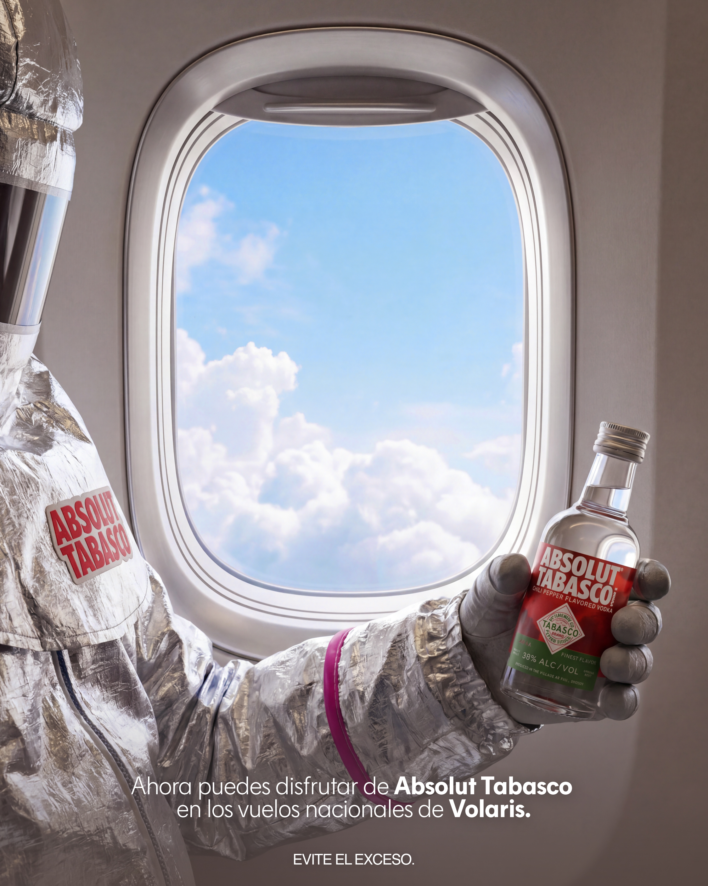
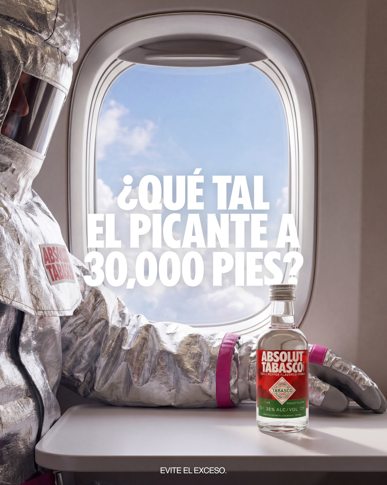
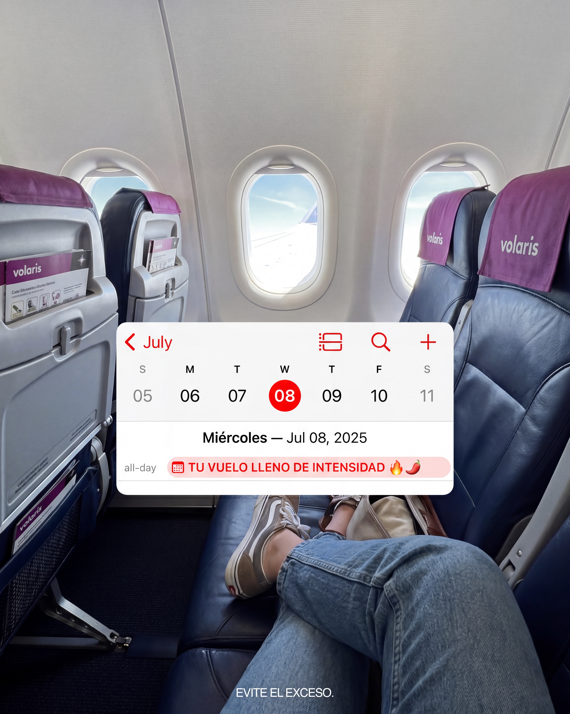
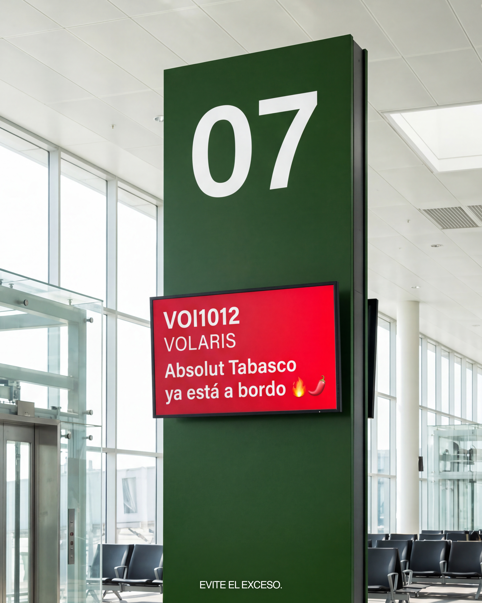
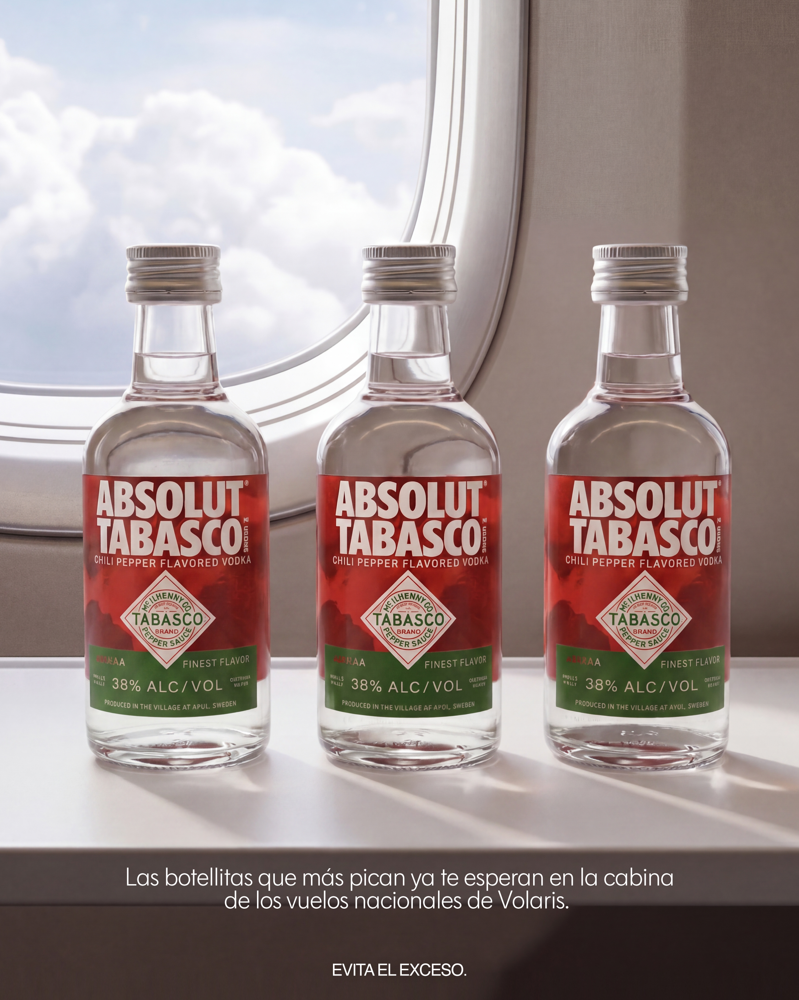

[ Absolut Tabasco x Volaris ]


Absolut lanza la mini Tabasco en vuelos nacionales de Volaris. El desafío no era simplemente promocionar un producto: era comunicar picante, fuego, intensidad en un contexto ultra sensible como un vuelo.
La paradoja estaba clara. ¿Cómo hablás de "fuego" cuando estás en el aire? Absolut, además, es marca con guidelines visuales consolidados y restrictivos. La pregunta era cómo romper esa estructura sin perder identidad, usando Tabasco como punto de quiebre.


Intensidad. La palabra que Absolut necesitaba para volar.

La decisión estratégica fue reemplazar "picante" y "fuego" por "Intensidad". Una palabra que funciona tanto para el producto como para la experiencia de volar. Después, todo se construyó alrededor de distintas frases de intensidad: "¿Qué tal el picante a 30.000 pies?", "¿Hasta dónde te puede llevar la intensidad?", "Intensidad a bordo".
Visualmente, el ají rojo se convirtió en protagonista absoluto. Generé un sistema de imágenes donde el ají flota, vuela, convive en la cabina de Volaris. El astronauta —que ya es parte del ADN visual de Absolut— se integró naturalmente a la narrativa. Usé IA como herramienta de dirección creativa: cada imagen fue concepto + ejecución visual bajo criterio art direction. El resultado es una campaña que conversa con Absolut sin pedirle permiso, que es coherente visualmente, y que habla el idioma de Volaris sin sonar forzada.

Comunicar en un contexto sensible requiere lenguaje preciso. Un vuelo no es lugar para "fuego" pero sí para "intensidad".
Absolut aprobó una expansión estratégica de su identidad visual sin comprometer sus guidelines. Para una marca con esa rigidez, eso significa que la idea funcionó en dos planos: estratégico y visual.